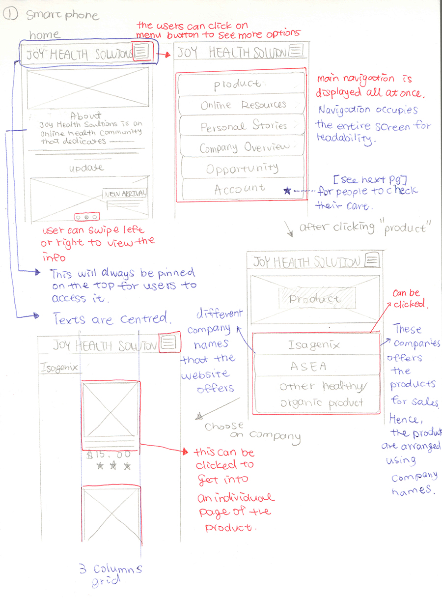
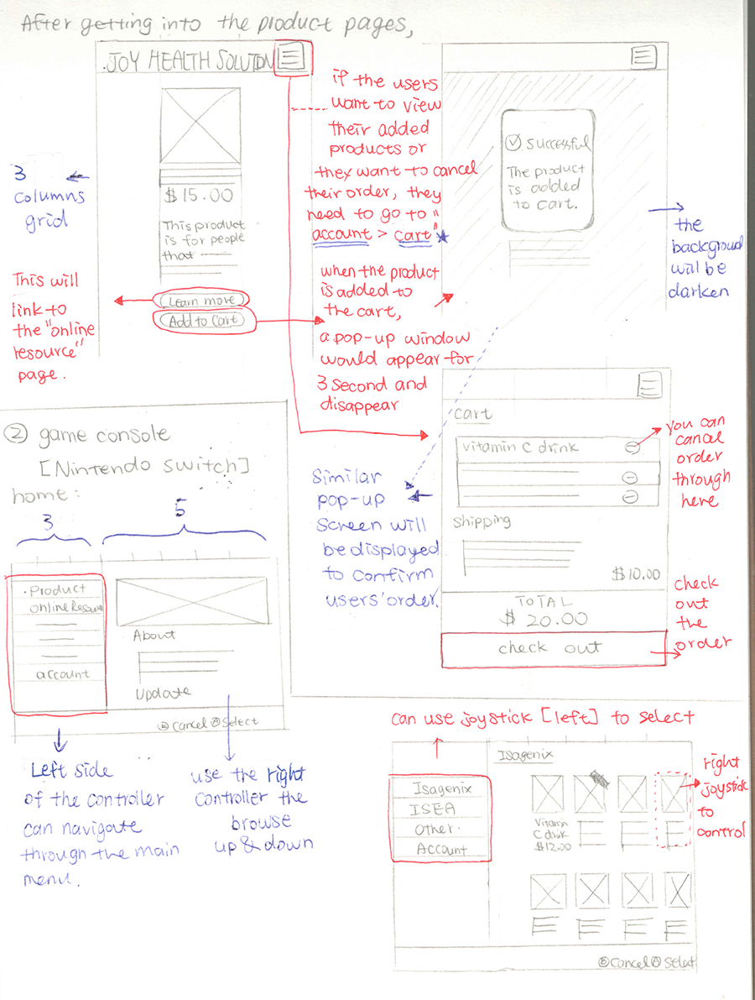
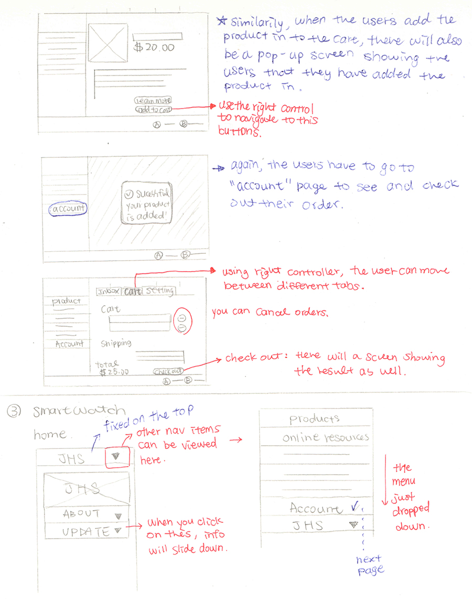

Joy Health Solutions
User Flow
Product Page
The underlying grid through out smartphones, game consoles(here I am using Nintendo Switch as the main example for designing) and smartwatches is mostly single or 3 columns except for game consoles where the screen would mainly be split into half and the right side would have a much detailed grid (but there will be 5 columns).
  